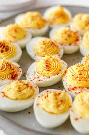

Deviled Eggs

Description
Deviled eggs made to enhance hard boiled eggs
Ingredients
- 6 Eggs
- Mayonnaise (3 tablespoons)
- Mustard (1 teaspoon)
- Vinegar (1 teaspoon)
- Salt (1/2 teaspoon)
- Pepper (1/8 teaspoon)
- Paprika
Steps
- Place eggs gently into saucepan. Add water 1/2'' above eggs. Cover with lid
- Heat to boil. Once boiling, turn down heat, cook for 20 minutes
- Cool eggs with cold water and peel (leave unpeeled eggs in fridge overnight if possible
- Cut Each egg in half lengthwise
- Remove yolks with spoon and place all yolks in mixing bowl
- Mash yolks with fork
- Add 1/2 tsp salt, 1/8 tsp pepper, 1 tsp mustard, 1 tsp vinegar, 3 tsp Mayo. Mix Well
- Spoon or pipe mixture into egg whites
- Sprinkle Paprika on top
- Cover and refrigerate